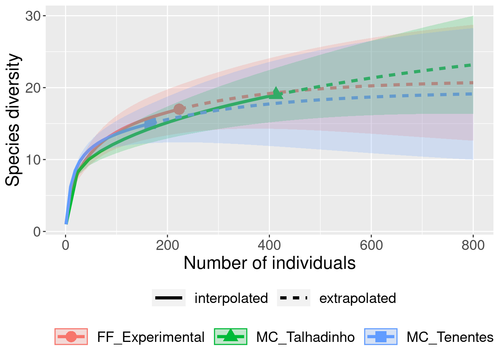

Capítulo7 Rarefação
7.1 Backgorund da análise
Um das dificuldades na comparação da riqueza de espécies entre comunidades é decorrente da diferença no esforço amostral (e.g.diferença no número de indivíduos, discrepância na quantidade de unidades amostrais ou área amostrada) que inevitavelmente influenciará no número de espécies observadas (Gotelli & Chao 2013). O método de rarefação nos permite comparar o número de espécies entre comunidades quando o tamanho da amostra ou a abundância de indivíduos não são iguais. A rarefação calcula o número esperado de espécies em cada comunidade tendo como base comparativa um valor em que todas as amostras atinjam um tamanho padrão, ou comparações baseadas na menor amostra ou com menos indivíduos (dentre todas amostras possíveis). O teste foi formulado considerando seguinte pergunta: Se considerarmos n indivíduos ou amostras (n < N) para cada comunidade, quantas espécies registraríamos nas comunidades considerando o mesmo número de indivíduos ou amostras?
\[E(S) = \sum 1 - \frac{{(N - N_1)}/{n}}{{N}/{n}}\]
Onde:
E(S) = Número de espécies esperado,
N = Número total de indivíduos na amostra,
Ni = Número de indivíduos da iésima espécie,
n = tamanho da amostra padronizada (menor amostra).
Gotelli & Collwel (2001) descrevem este método e discutem em detalhes as restrições sobre seu uso na ecologia: i) as amostras a serem comparados devem ser consistentes do ponto de vista taxonômico, ou seja, todos os indivíduos devem pertencer ao mesmo grupo taxonômico; ii) as comparações devem ser realizadas somente entre amostras com as mesmas técnicas de coleta; iii) os tipos de hábitat onde as amostras são obtidas devem ser semelhantes; e iv) é um método para estimar a riqueza de espécies em uma amostra menor – não pode ser usado para extrapolar e estimar riqueza. Contudo, é importante ressaltar que esta última restrição foi superada por Colwell et al. (2012) e Chao & Jost (2012) que desenvolveram uma nova abordagem onde os dados podem ser interpolados (rarefeito) para amostras menores e extrapolados para amostras maiores.
7.1.0.1 Exemplo prático - Rarefação
7.1.0.1.1 Explicação dos dados
Neste exemplo usaremos os dados de espécies de morcegos amostradas em três fragmentos florestais (Breviglieri 2008): i) Mata Ciliar do Córrego Talhadinho com 12 hectares inserida em uma matriz de pastagem; ii) Mata Ciliar do Córrego dos Tenentes com 10 hectares inserida em uma matriz de cultivo de cana-de-açucar e pastagem; e iii) Fazenda Experimental de Pindorama com 128 hectares inserida uma matriz de cana-de-açúcar e pastagem.
Pergunta:
A riqueza de espécies de morcegos é maior na Fazenda Experimental do que nos fragmentos florestais menores?
Predições
O número de espécies será maior em fragmentos florestais maiores.
Variáveis
- Variáveis preditoras
- matriz ou dataframe com as abundâncias das espécies de morcegos registradas nos três fragmentos florestais
Checklist
- Verificar se a sua matriz ou dataframe estão com as espécies nas linhas e os fragmentos florestais nas colunas
7.1.1 Análise
Calculo da rarefação
library(ecodados)
library(iNEXT)
dados_rarefacao <- rarefacao_morcegos
resultados_rarefacao <- iNEXT(dados_rarefacao, q = 0, datatype = "abundance", endpoint = 800)
# Visualizar os resultados
ggiNEXT(resultados_rarefacao, type = 1, facet.var = "order")## Warning in ggiNEXT.iNEXT(resultados_rarefacao, type = 1, facet.var = "order"):
## invalid facet.var setting, the iNEXT object do not consist multiple orders.
Interpretação dos resultados
Neste exemplo, foram registrados 166 indivíduos na MC_Tenentes, 413 na MC_Talhadinho e 223 na FF_Experimental. Lembrando, você não pode comparar a riqueza de espécies observada diretamente: 15 espécies na MC_Tenentes, 17 espécies na MC_Talhadinho, e 13 espécies no FF_Experimental. A comparação da riqueza de espécies entre as comunidades deve ser feita com base na riqueza de espécies estimada que é calculada com base no número de indivíduos da comunidade com menor abundância (166 indivíduos). Olhando o gráfico é possível perceber que a riqueza de espécies de morcegos estimada não é diferente entre os três fragmentos florestais quando corrigimos o problema da abundância pela rarefação. A interpretação é feita com base no intervalo de confiança de 95%. As curvas serão diferentes quando os intervalos de confiança não se sobreporem (Chao et al. 2014). Percebam que está abordagem, além da interpolação (rarefação), também realiza extrapolações que podem ser usadas para estimar o número de espécies caso o esforço de coleta fosse maior. Este é o assunto do nosso próximo tópico.